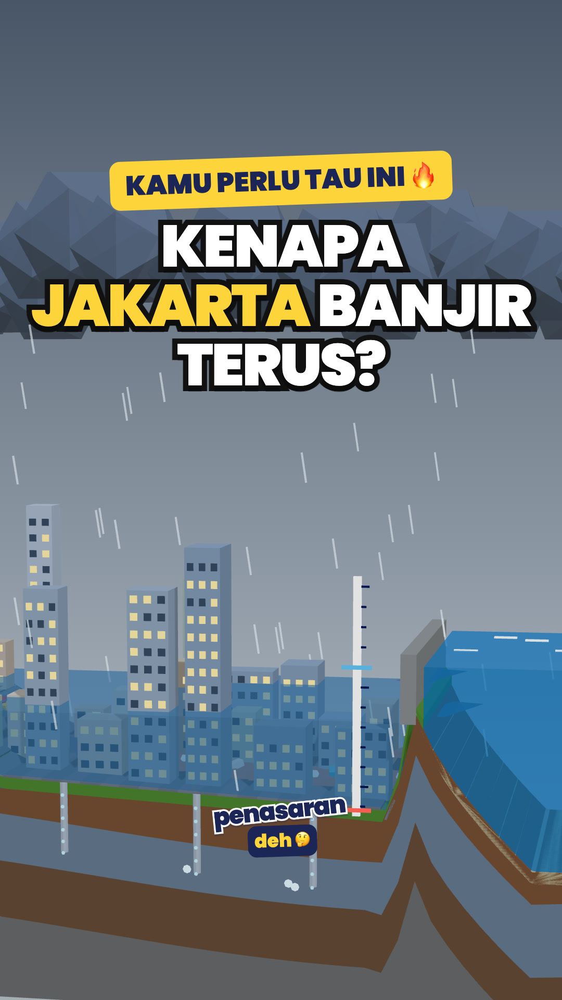

Penasaran Deh
Penasaran Deh adalah kanal edukasi berbahasa Indonesia yang menjelaskan hal sehari-hari lewat video animasi 3D berdurasi sekitar satu menit: kenapa Jakarta banjir, bagaimana septic tank bekerja, kenapa lahan gambut mudah terbakar, dan banyak lagi.
Video kami tayang di TikTok, Instagram, Facebook, dan YouTube Shorts. Konten dibuat dengan bantuan AI dan selalu diberi label konten AI.

Tentang alat unggah kami
Penasaran Deh Uploader adalah alat internal yang kami pakai untuk mengunggah video kami sendiri ke akun resmi Penasaran Deh. Alat ini tidak dipakai oleh pengguna lain dan tidak mengumpulkan data penonton.